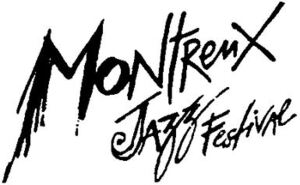

Trade Mark Journal No.2026/011 13 March 2026
WO0000001903940 (3,9,14,15,16,18,25,35,41,43,45)
Office of origin: Switzerland
Date of International Registration:20 November 2025
Date of designation in the UK:
20 November 2025

International priority date claimed: 20 May 2025
(Switzerland)
(832782)
- Class 3
- Non-medicated toiletry preparations and cosmetic products; non-medicated dentifrices; perfumery products, essential oils; bleaching preparations and other substances for laundry use; cleaning, polishing, degreasing and abrasive preparations.
- Class 9
- Scientific, research, navigation, surveying, photographic, cinematographic, audiovisual, optical, weighing, measuring, signaling, detecting, testing, inspecting, life-saving and teaching apparatus and instruments; apparatus and instruments for conducting, switching, transforming, accumulating, regulating or controlling electricity distribution or use; apparatus and instruments for sound, image or data recording, transmission, reproduction or processing; recorded or downloadable media, blank digital or analog recording and storage media; software for computers; computer software intended for use in the field of broadcasting; computer software intended for use in the field of the Internet and Internet publication; computer software for sharing audio, video and text content; interactive software; interactive touch screen terminals; application software; downloadable computer software applications; downloadable electronic publications; software for downloading audio or video recordings in digital format via a global computer network; software downloadable via smartphones; application software for mobile telephones; downloadable music tracks in digital format; mobile telephones, mobile terminals or other applications for laptops and office computers; sound, image and multimedia recording media included in this class and all pre-recorded with recordings of music shows and concerts, particularly vinyl records, CDs and DVDs; audio tapes featuring music; videotapes featuring prerecorded music; sound recording discs featuring music; compact disks featuring music; downloadable video recordings; downloadable video recordings featuring music; downloadable music files; downloadable digital music; digital music which can be downloaded on the Internet from MP3 web sites; ring tones, graphics and music downloadable via a global computer network and wireless devices; amplifiers for musical instruments; music headphones; tickets in the form of magnetic cards; downloadable computer games; game software; virtual-reality game software; downloadable software enabling consumers and businesses to manage digital collectables using software technology and blockchain-based smart contracts, the aforesaid being digital collectables representing players, games, recordings, statistics, information, photos, images, videos, highlights and entertainment experiences in the field of music; downloadable digital files authenticated by non-fungible tokens [NFTs], virtually generating objects and presenting them in an online virtual environment, namely, shoes, apparel, headwear, eyewear, bags, sports bags, backpacks, art objects, trophies and toys; downloadable digital files authenticated by non-fungible tokens [NFTs]; downloadable files containing digital collection objects.
- Class 14
- Coins, ingots and medals in precious metals or in their alloys, commemorative or not; jewelry, precious stones; pins [jewelry]; timepieces and chronometric instruments; key rings.
- Class 15
- Musical instruments; music stands and stands for musical instruments; conductors' batons.
- Class 16
- Paper, cardboard; printed matter; calendars; printing blocks; stationery; instructional or teaching material (except apparatus); printed guides, brochures, postage stamps, newspapers, periodicals, books, catalogs, photographs and posters; souvenir tickets; stationery and office requisites, except furniture; adhesives for stationery or household purposes; drawing materials and materials for artists; paintbrushes; instructional or teaching material; plastic sheets, films and bags for wrapping and packaging.
- Class 18
- Leather and imitations of leather; animal skins and hides; luggage and transport bags; umbrellas and parasols; walking sticks; whips, harness and saddlery; collars, leashes and clothing for animals; luggage, bags, wallets; bags; travel bags; suitcases; attaché cases; briefcases [leatherware]; empty make-up bags; clutch bags [evening handbags]; handbags; shoe covers for travel; gym bags; sports bags; sports backpacks; leather bags; bags of imitation leather; garment bags for travel; waterproof bags; beach bags; reusable shopping bags; bags and pocket wallets of leather; carry-all bags; trunks and suitcases; toiletry bags; empty bags for cosmetic products; key cases; document cases; purses; school bags; backpacks; haversacks.
- Class 25
- Clothing, footwear, headwear.
- Class 35
- Advertising and marketing services; disseminating advertisements via all media; commercial management services; commercial administration; office functions; rental of advertising space and advertising material; advertising by sponsoring; marketing and advertising services in the field of television sports entertainment; commercial intermediation services; managing a database providing information and news services; computerized management of digital archives and files containing radio and television programs; commercial management of a platform for exchanging text, images, sound and videos; retail sale via global electronic networks (the Internet) of digital files containing text, images, sound and videos; organization of events for commercial and advertising purposes; organization of advertising events; organizing a commercial event enabling the exchange of radio and television programs between radio and television channels; advertising promotion of third-party goods and services, by means of contractual agreements, particularly partnership [sponsorship] and licensing agreements; rental of advertising space of all type and on all media, whether digital or not; computer file management, namely digital file management comprising a portfolio of images and video sequences intended for use under license in traditional advertising and in the advertising promotion of behavior (moral advertising); presentation of goods on all communication media, for retail purposes; sales promotion for third parties; provision of online marketplaces for buyers and sellers of goods and services; promotion of goods and services by means of sponsorship of cultural events; electronic commerce (e-commerce) services, namely making product information available via telecommunication networks for advertising and sales purposes; online retail services for downloadable and pre-recorded music and movies; retail services or wholesale services for clothing, footwear, headgear; retail or wholesale services for jewels, jewelry, timepieces, fashion accessories and bags; online retail services for software virtually generating goods and presenting them in a virtual environment; lobbying services for commercial purposes; statistical report analyses and presentation; compilation of statistics.
- Class 41
- Cultural activities; education; training; entertainment; organization of music festivals; organization of shows and concerts; editing of books in the field of music; publication of texts, other than advertising texts, in the field of music; editing of catalogs, prospectuses, guides; organization and conducting of exhibitions, colloquiums, conferences, congresses, seminars and symposiums for cultural or educational purposes; organization of cultural events; organization of contests; entertainment services, including hosting of entertainment events and festivals; club services as entertainment; ticket agency services (entertainment); production and directing of radio and television entertainment, whether live or not; production of sound and video recordings; presentation and distribution of video and sound recordings; providing movie, television and music video entertainment via an interactive website; provision of music videos, not downloadable, by means of a video-on-demand service; audio and video recording services for shows and concerts enabling artists and their rights holders to subsequently edit all or part of the material thus recorded and to manufacture and sell, in stores, records and recordings intended for the public; online provision of digital music that cannot be downloaded from the Internet; provision of information with respect to entertainment; production of sound, music and video recordings; production and publishing of music; entertainment services provided by musical groups; online provision of electronic publications, not downloadable, in the field of music, rental and/or provision, by means of a computer network, of interactive education and entertainment products, namely interactive compact discs, CD-ROMs, computer games; entertainment, namely presentation of interactive education and entertainment products, namely interactive compact discs, CD-ROMs, computer games; providing games on the Internet; rental of audio equipment; motion picture production; cinematographic film projection; distribution of motion pictures; producing, presenting and distributing films and video and sound recordings; interactive entertainment services; editing and publishing services; provision of non-downloadable electronic publications online; online publication of electronic books, reviews, texts (except advertising texts) and periodicals; publication of multimedia material online; arranging and conducting ceremonies relating to the presentation of prizes and awards.
- Class 43
- Services for providing food and beverages; café services; cafeteria and restaurant services; catering services; reservation of hotels and temporary accommodation; welcoming and hospitality services, namely providing food and drink.
- Class 45
- Copyright management; legal services with respect to drafting and followup of contracts for artistic and musical performances with a view to their live performance and subsequent exploitation by any means; licensing of intellectual property rights.
Fondation du Festival de Jazz de Montreux
Representative: TRADAMARCA SA, Avenue du Prieuré 8, CH-1009 Pully, SWITZERLAND